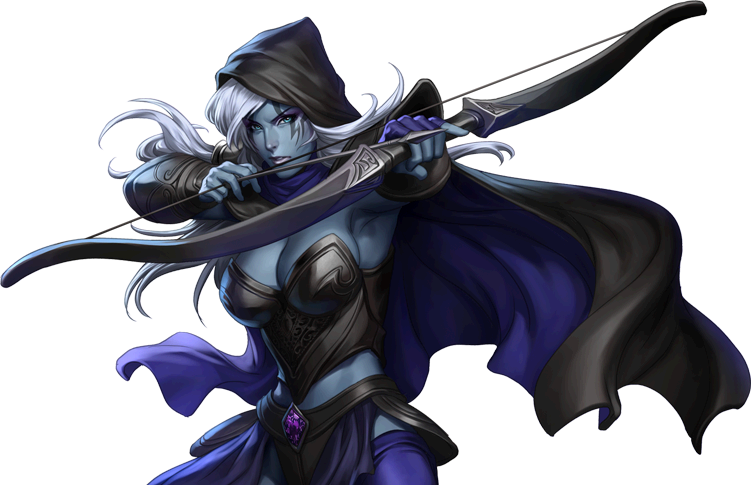

Where did our data
come from?
 The data set that we used was fetched from an open source API. This provided us all kinds of data, from player profiles to match details. Since we were focusing on pro matches and our own statistics, we fetched the statistics of about 1400 professional matches, and 100-100 matches from our profiles and some friends' profiles, so we ended up with around 1900 matches in total.
Each match contains 10 players and the chat log. Every chat message is stored and connected to an account, which gave a table that was used to build up the sentiment and chat analysis. We collected over 17000 chat messages.
The profiles also contained other interesting information apart from the matches played on that account. We used the nationality and the MMR (match making rating) for grouping the results.

This is the data structure we used for our solution. This fairly easy structure gave us simple queries and a fair performance.